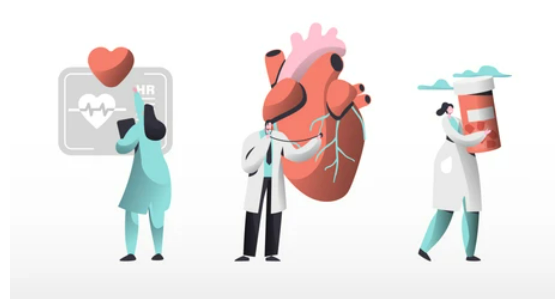

Heart Transplant A heart transplant is a life-saving surgical procedure performed to address severe heart conditions or end-stage heart failure. It involves removing a diseased or failing heart from a patient's chest and replacing it with a healthy heart obtained from a carefully matched donor. This intricate procedure offers a new lease on life to individuals who have exhausted all other medical treatments and are facing limited options. The process begins with an extensive evaluation of both the recipient and the potential donor to ensure compatibility and minimize the risk of rejection. Once a suitable match is found, the surgery is meticulously performed under general anesthesia. The patient's failing heart is removed, and the donor heart is carefully connected to the major blood vessels and the surrounding tissues. Specialized medical techniques are employed to ensure proper blood flow and function.

Heart transplant surgery is considered to be one of the most complex surgeries. However, the advanced technology used by Indian doctors is attracting many foreign nationals to India for organ transplants.
What is heart failure?
Heart failure is one of the leading causes of death globally. Heart failure accounts for around 36% of global deaths. But have you ever wondered what heart failure is?
According to the CDC heart failure is marked by the inability of the heart to pump blood to different parts of the body including the heart efficiently.Heart failure is a grave condition that needs proper medical intervention.
Symptoms of heart failure?
People with heart failure usually experience the following symptoms:
- Shortness of breath:the shortness of breath is persistent even while resting.
- Edema or swelling in the feet, legs, and ankles.
- Feeling tired almost all the time.
- Irregular heartbeats
- Ascites or swelling in the abdomen
- Loss of memory, and reduced concentration.
- Bluish discoloration on the lips, the tip of the nose, and on the fingertips.
- Nausea and loss of appetite.
Different treatment options for heart failure?
The diagnosis of heart failure is overwhelming for many. While heart failure is a complicated heart condition your doctor might advise you with the best treatment options. The different treatment options for heart failure include:
- Medication
- Pacemaker or defibrillator
- IV drug therapy
- Left ventricular assist device.
Who is the Right Doctor for heart transplant ?
The right doctor for a heart transplant is typically an experienced Cardiothoracic Surgeon specializing in heart transplantation. They work in close collaboration with a multidisciplinary team of healthcare professionals. Here are the key specialists involved in the heart transplant process:
1. Cardiothoracic Surgeon:A Cardiothoracic Surgeon is a highly trained and specialized surgeon who performs surgeries on the heart, chest, and lungs. They are responsible for the surgical aspect of the heart transplant procedure, which involves removing the diseased heart and implanting the donor heart.
2. Interventional Cardiologist:Interventional Cardiologists play a crucial role in evaluating and managing the patient's heart condition leading up to the transplant. They may perform procedures like cardiac catheterization and angioplasty.
3. Cardiologist (Heart Failure Specialist):A Cardiologist with expertise in heart failure is responsible for managing the patient's heart condition prior to the transplant. They help determine if a transplant is the best treatment option and provide ongoing care.
4. Transplant Coordinator: A Transplant Coordinator is a specialized nurse or healthcare professional who serves as a liaison between the patient, transplant team, and donor team. They help coordinate all aspects of the transplant process, including evaluation, listing, and post-transplant care.
5. Immunologist or Immunology Specialist:These specialists are responsible for managing the patient's immune system, especially after the transplant. They help design immunosuppressive regimens to prevent rejection of the donor heart.
6. Anesthesiologist:An Anesthesiologist administers anesthesia and monitors the patient's vital signs during the surgery.
7. Psychologist or Psychiatrist:These mental health professionals evaluate the patient's psychological and emotional readiness for a heart transplant and provide support throughout the process.
8. Social Worker:Social Workers assist with the emotional and logistical aspects of the transplant process, including support for the patient and their family.
9. Nutritionist/Dietitian:A Nutritionist or Dietitian helps ensure the patient maintains a healthy diet before and after the transplant, which is crucial for post-operative recovery.
10.Rehabilitation Specialist:After the transplant, Rehabilitation Specialists help with the patient's physical recovery and may provide guidance on exercise and lifestyle adjustments.
What is the Usual Success Rate for this Procedure?
The success rate for heart transplantation is generally quite high, with a significant majority of patients experiencing improved quality of life and extended survival. However, it's important to note that success rates may vary based on factors such as the patient's overall health, the presence of other medical conditions, and the quality of post-transplant care.
On average, the survival rates after heart transplantation are as follows:
1. 1-Year Survival Rate: Approximately 90-95% of recipients survive the first year after the transplant.
2. 3-Year Survival Rate: About 80-85% of recipients are still alive three years after the transplant.
3. 5-Year Survival Rate: The five-year survival rate is around 75-80%.
4. 10-Year Survival Rate: Approximately 50-60% of recipients survive ten years or more post-transplant.
What are the factors affecting cost of Heart Transplant?
Cost related to Angiography in India
| Treatment name | Cost range |
|---|---|
| Heart Transplant | Rs.2220000 to Rs.2960000 |
| Transposition of the Great Arteries (TGA) Surgery | Rs.199800 to Rs.266400 |
| Heart Implants | Rs.244200 to Rs.325600 |